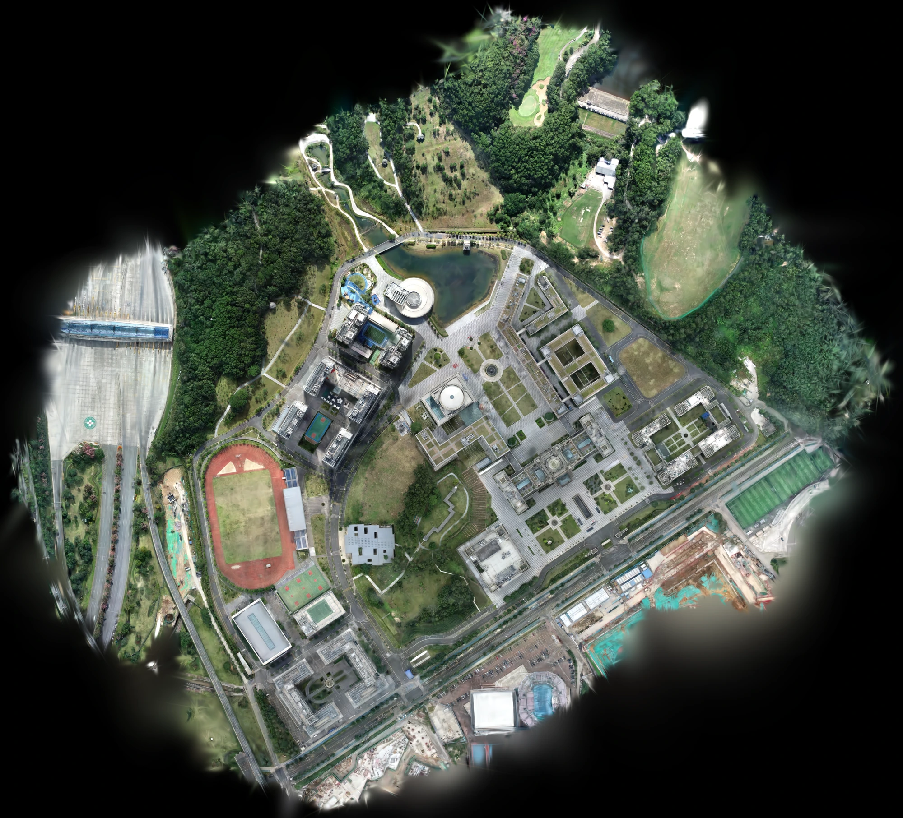
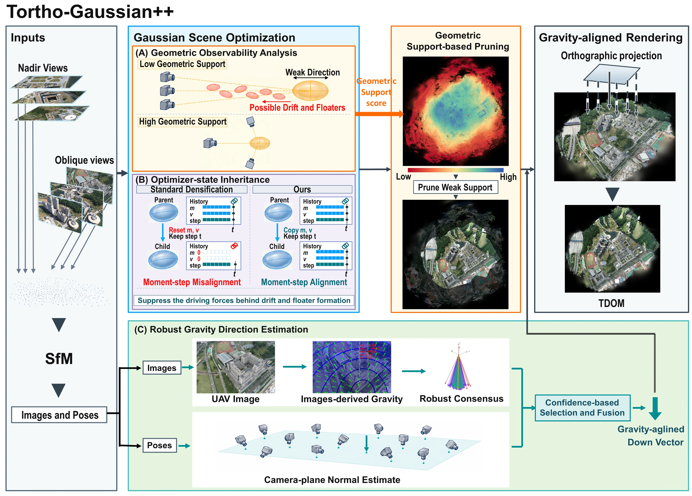
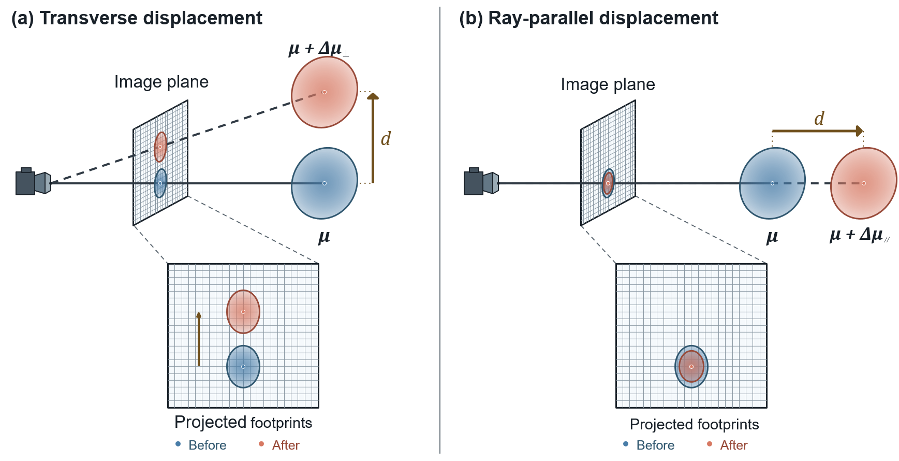
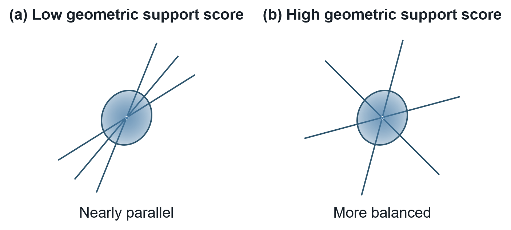
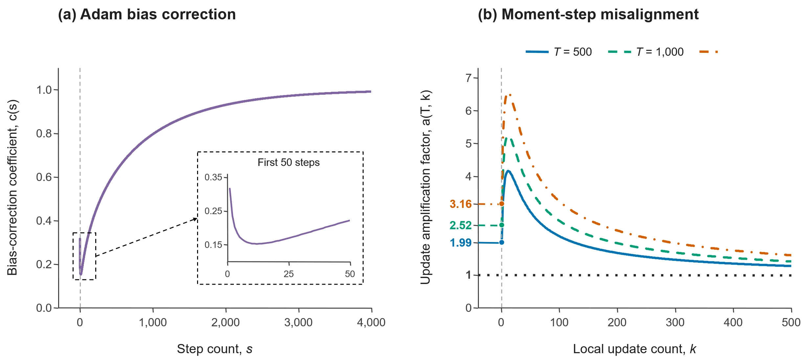
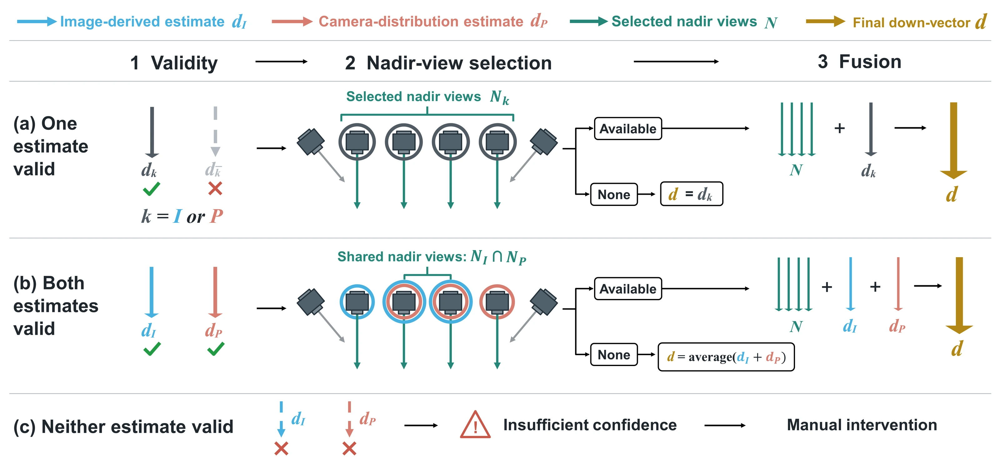
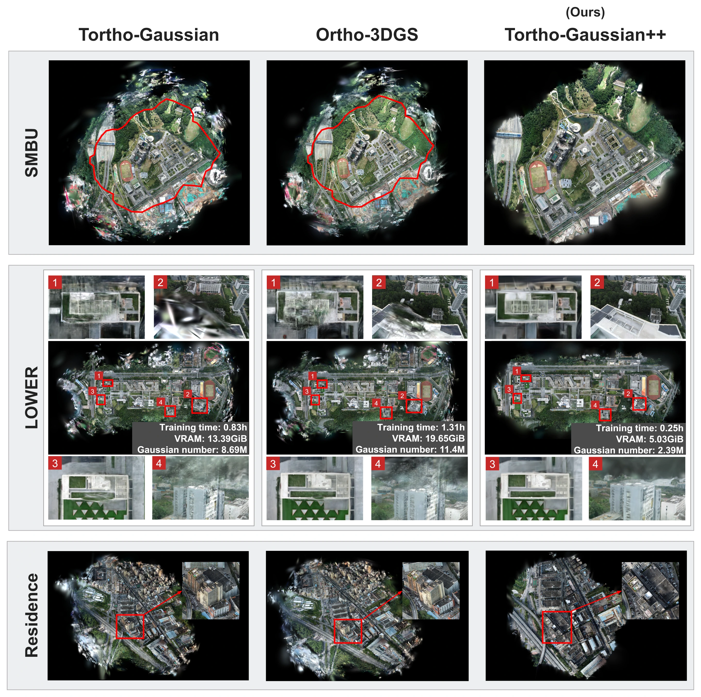

Support the geometry.
Geometric observability
A per-Gaussian support tensor summarizes directional constraints from viewing rays. Low support scores identify unreliable peripheral regions for automatic pruning after training.
School of Geodesy and Geomatics, Wuhan University
* Corresponding author

563 images · Nadir + oblique imagery · Stable flight altitude
Select image to enlargePSNR improvement
Less training time
Lower peak VRAM
Fewer Gaussians
SMBU · Tortho-Gaussian++ compared with vanilla 3DGS.
3D Gaussian Splatting (3DGS) has demonstrated remarkable performance in aerial scene reconstruction, motivating its extension to true digital orthophoto map (TDOM) generation. We propose Tortho-Gaussian++, a training framework that suppresses geometric drift and floaters and automatically prunes unreliable peripheral regions, coupled with a robust gravity-aligned TDOM rendering solution.
First, viewing-ray-based geometric observability analysis quantifies the reliability of individual Gaussians and identifies peripheral regions with weak geometric support. Second, refined optimizer-state initialization for newly created Gaussians suppresses drift and floaters during densification without external geometric priors. Third, robust gravity direction estimation combines image-derived cues, camera-distribution priors, and nadir views to establish a gravity-aligned orthogonal projection reference.
Experiments on large-scale UAV datasets demonstrate competitive rendering quality with reduced training time, GPU memory usage, and Gaussian count. Qualitative comparisons show reduced geometric drift and floaters, while robust gravity estimation alleviates tilt-induced facade artifacts. The training strategy can be integrated into existing Gaussian splatting pipelines.

A per-Gaussian support tensor summarizes directional constraints from viewing rays. Low support scores identify unreliable peripheral regions for automatic pruning after training.
New Gaussians inherit their parent’s accumulated moment estimates while retaining the shared optimizer step count. This reduces update amplification caused by moment-step misalignment.
Confidence-based selection and fusion combine image-derived gravity cues, camera-distribution priors, and nadir views to establish the orthogonal projection reference.
A perspective image strongly constrains a Gaussian’s position across a viewing ray, but provides much weaker constraints along that ray. When multiple views have nearly parallel rays or limited viewing diversity, the remaining depth ambiguity leaves directions in which Gaussians can move without a strong photometric penalty. Optimization updates can accumulate along these weakly constrained directions, producing geometric drift and floaters. Our geometric support tensor characterizes this directional imbalance for each Gaussian.


Resetting a child Gaussian’s moments while keeping a large global step count creates inconsistent Adam bias correction. The resulting update amplification is especially problematic along weakly constrained directions.

The method checks the validity of the image-derived and camera-distribution-based estimates, selects compatible nadir views when available, and combines supported cues. Insufficient confidence can still require manual intervention.

Drag the divider in each image: baseline on the left, Tortho-Gaussian++ on the right. Use the arrow keys when a slider is focused.
Original crops are shown without geometric registration; framing can differ between methods.

Reference
Source code and project updates are available in the Tortho-Gaussian++ repository.
Read the paper on arXiv:2611.33905.
@misc{wang2026torthogaussianplusplus,
title = {Tortho-Gaussian++: Suppressing Geometric
Drift and Floaters for Robust Gravity-Aligned
TDOM Generation in Large-Scale Aerial Scenes},
author = {Xiang Wang and Xin Wang and Zongqian Zhan},
year = {2026},
eprint = {2611.33905},
archivePrefix = {arXiv},
primaryClass = {cs.CV},
url = {https://arxiv.org/abs/2611.33905}
}